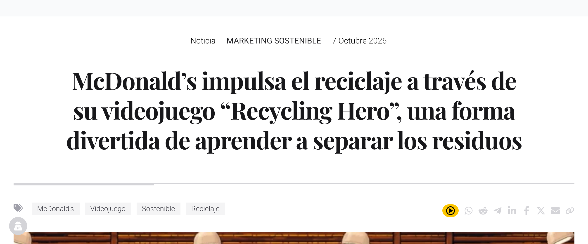
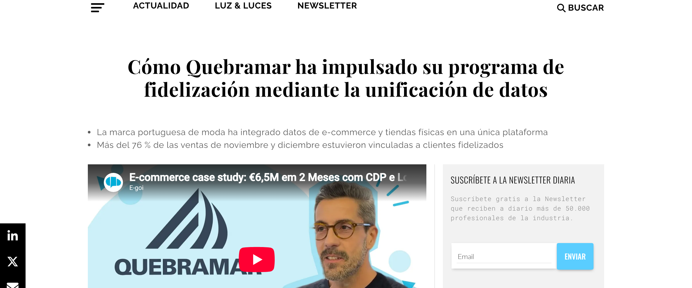
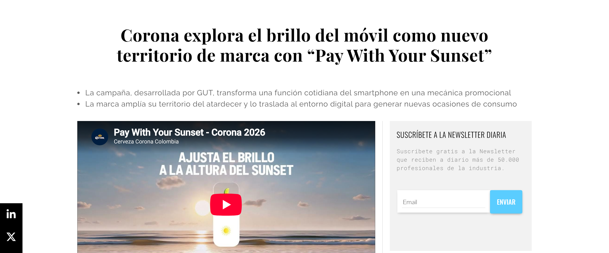
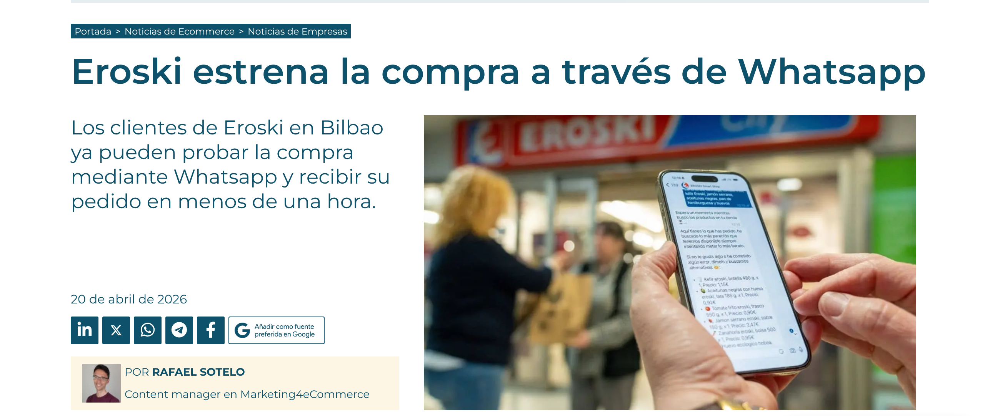

Videojuego retro de 32 bits: hay que meter cada residuo en su contenedor mientras avanzan por cintas, en tres niveles. Se juega escaneando un QR en más de 670 restaurantes, desde la app MyMcDonald's o desde la web.
Educar en la separación de residuos y generar interacción con la marca.
Aprende jugando (los errores se explican al momento) y desbloquea ofertas a precio reducido.
Imagen de compromiso ambiental, uso del QR dentro del local y tráfico hacia su app.
Parte de su plan de sostenibilidad: ya hay estaciones de reciclaje en el 100 % de los locales y el juego convierte esa acción física en educación.
Conecta mantel, quiosco o envase con una experiencia digital en segundos y sin instalar nada. Pero la noticia solo da cifras de despliegue, no de uso: yo mediría jugadores únicos, tasa de finalización y canjes. Y si se premia con un cupón, se puede jugar por el descuento y no por reciclar.

Marca portuguesa de moda con más de 50 tiendas. Su Club ahora vive en una tarjeta de Apple Wallet y Google Wallet con saldo de cashback e historial de compras, válida en tienda y online y conectada a una plataforma de datos (CDP).
Fidelizar e identificar al cliente también en tienda para conocerlo mejor.
Su saldo siempre en el móvil: 5 € de bienvenida, 20 € por cumpleaños y 10 % de cashback, con avisos antes de que caduque.
Datos unificados de tienda y online: +6,5 M€ en ventas ligadas a fidelización y +43,5 % de clientes identificados.
Tenía los datos separados entre tienda y online y casi nadie identificado en tienda. El wallet es la forma de reconocer al cliente en todos los canales.
El wallet no es un adorno: es la puerta de entrada de datos (los clientes fidelizados gastan un 26 % más por compra). Pero las cifras las da la propia marca con su socio E-goi, el 76 % aparece asociado a 2024 en un artículo de 2026 y los avisos van por SMS y email, no por notificaciones del wallet.

El usuario ajusta el brillo de la pantalla hasta igualarlo con el atardecer característico de Corona y así desbloquea promociones en TaDa, una app de delivery de bebidas. Una función cotidiana del smartphone convertida en mecánica promocional.
Notoriedad y conversión: llevar el territorio de marca al móvil y empujar la compra.
Un juego sencillo, un momento de desconexión accesible en cualquier sitio y una promoción como premio.
Amplía su territorio al entorno digital con una idea simple, escalable y aplicable a otros mercados.
El atardecer es un activo histórico de Corona (desconexión, naturaleza, disfrute). Lo traslada al móvil para crear ocasiones de consumo, incluso en ciudad o sin luz natural.
Es lo más original: el móvil no es solo la pantalla de un anuncio, es el propio medio. Pero el artículo no da métricas ni detalla las promociones, así que no sé si vendió o solo hizo ruido. Depende de un socio (TaDa) y, al ser cerveza, yo limitaría la promoción a mayores de edad.

Eroski Smart Shop: el cliente escribe, manda un audio o la foto de su lista; un bot interpreta el pedido y propone una cesta completa que se valida y se paga en la plataforma de Eroski. Entrega en una hora y propuesta de menús y recetas. Piloto de un año.
Conversión y experiencia de cliente: vender online de forma más sencilla y validar el modelo.
Comprar «tan sencillo como enviar un mensaje», sin descargar nada y con la compra en casa en una hora.
Llega a quien no usa apps, aprovecha una aplicación de uso diario y obtiene datos reales de aceptación antes de ampliar.
Acercar la compra online de frescos a quienes no quieren apps ni un e-commerce clásico. El piloto mide la aceptación antes de invertir.
Es la más significativa: WhatsApp pasa de canal de comunicación a canal de venta completo. Al ser un piloto no hay resultados y solo cubre Bilbao. Riesgos: depender de Meta, errores de la IA con la cesta, datos personales y que «la opción más barata por defecto» afecte al margen.
| McDonald's | Quebramar | Corona | Eroski | |
|---|---|---|---|---|
| Sector | Comida rápida | Moda | Bebidas | Supermercados |
| Herramienta móvil | QR + videojuego | Wallet + datos de cliente | Brillo del móvil + app TaDa | WhatsApp + IA conversacional |
| Objetivo | Educar e interactuar | Fidelizar | Notoriedad y conversión | Vender y mejorar la experiencia |
| Idea estratégica | Convertir una acción física (reciclar) en educación | Identificar al cliente en todos los canales | Llevar el atardecer de marca al móvil | Comprar sin apps, donde ya está el cliente |
| Valor para el usuario | Aprende jugando y consigue ofertas | Saldo y ventajas siempre a mano | Juego sencillo y promoción | Comodidad: un mensaje y entrega en 1 h |
| Valor para la marca | Imagen sostenible y tráfico a su app | Datos unificados tienda y online | Territorio de marca en digital | Llega a quien no usa apps; datos del piloto |
| Evidencia de resultados | Solo despliegue: 670 restaurantes | ROI 21× y +43,5 %… según la propia marca | Ninguna métrica | Piloto de un año en 9 tiendas |
| Límite o riesgo | Sin datos de uso real | Cifras de la propia marca | Sin métricas; control de edad | Depender de Meta; fallos de la IA |
Las cuatro usan el móvil como puente entre lo físico (mantel, tienda, brillo de pantalla, lista de la compra) y lo digital, y buscan una relación continua y no un impacto puntual.
Pantalla de juego en McDonald's, monedero y tarjeta en Quebramar, el propio medio en Corona y canal de venta con IA en Eroski.
Se pasa de recibir un mensaje a participar (jugar, ajustar, chatear, acumular). La marca aprende del usuario y personaliza.
Inmediatez, personalización, medición y que el móvil siempre va con el usuario. Además permite probar con poco coste, como hace Eroski con su piloto.
Privacidad (RGPD), saturación de avisos, dependencia de terceros (Meta, TaDa) y la distancia entre participar y comprar. Casi ninguna noticia aporta resultados fiables.
Dar un beneficio inmediato, partir de un objetivo claro, medir y contar resultados y usar un canal donde el cliente ya está. Una pyme puede empezar con un QR en el envase.
El valor no está en la tecnología (QR, wallet, WhatsApp): está en que resuelva algo al usuario, encaje con lo que la marca ya hace y se pueda medir. Sin resultados, solo es una buena idea.
PuroMarketing. (2026, 7 de octubre). McDonald's impulsa el reciclaje a través de su videojuego “Recycling Hero”, una forma divertida de aprender a separar los residuos.
https://www.puromarketing.com/171/217629/mcdonalds-impulsa-reciclaje-traves-videojuego-recycling-hero-forma-divertida-aprender-separar-residuosReason Why. (2026, 13 de marzo). Cómo Quebramar ha impulsado su programa de fidelización mediante la unificación de datos.
https://www.reasonwhy.es/actualidad/quebramar-case-study-impulsa-programa-fidelizacion-unificando-datos-tiendas-ecommerceReason Why. (2026, 7 de abril). Corona explora el brillo del móvil como nuevo territorio de marca con “Pay With Your Sunset”.
https://www.reasonwhy.es/actualidad/corona-explora-brillo-movil-nuevo-territorio-marca-pay-with-sunsetMarketing4eCommerce. (2026, 20 de abril). Eroski estrena la compra a través de Whatsapp.
https://marketing4ecommerce.net/eroski-estrena-la-compra-a-traves-de-whatsapp/